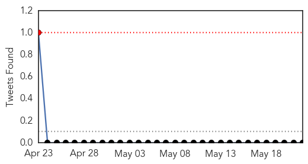
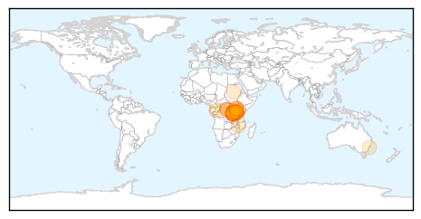
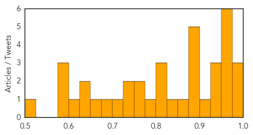

Ebola
30-Day Web Trend
0 alerts, 1 warnings
30-Day Twitter Trend
0 alerts, 0 warnings

Article Locations

Article Confidences

Top Articles:
- 1.000
- Liberia is Ebola-free—raising hopes for the region
- 0.999
- Guinea reports 27 new Ebola cases
- 0.999
- Guinea reports 27 new Ebola cases
- 0.999
- Sierra Leone makes progress in recovery from ebola crisis
- 0.999
- The Ebola outbreak highlights shortcomings in disease surveillance and response – and where we can do better
- 0.999
- Officials optimistic on fight against Ebola
- 0.998
- Learning the Lessons of Ebola: Why the Spread of Disease is About More Than Just Health
- 0.994
- Sierra Leone:- Frontline health workers were sidelined in $3.3bn fight against Ebola
- 0.993
- Irish medics return from Ebola mission in Sierra Leone
- 0.992
- Was the Ebola outbreak the beginning of the end for the World Health Organization?
- 0.992
- UN health agency responds to #Ebola spike by deploying team on border of #Guinea and #GuineaBissau
- 0.987
- Handling of Dead Bodies Spreading Ebola in Guinea
- 0.983
- Ebola in Liberia: Frightened patients infected their carers
- 0.980
- Steinhardt's Carlos Chirinos Helps Launch Song Contest To Help End Ebola
- 0.978
- UK artificial intelligence healthcare pioneer helps fight against Ebola and other deadly viruses
- 0.962
- UN to Eliminate Dread Diseases
- 0.952
- Japan Disburses 720,000 JPY worth of PPEs to Govt.
- 0.943
- WHO Calls For $100 Million Emergency Fund, Doctor 'SWAT Team' . News
- 0.928
- Humanity wins some
- 0.919
- Welcome to the Expotimes News
- 0.908
- West Africa Faces a Long Road to Recovery After the Ebola Crisis
- 0.870
- Morbidity and Mortality Weekly Report (MMWR): Progress Toward Polio Eradication — Worldwide, 2014–2015 - World
- 0.857
- Maple Valley woman shares perspective on Ebola outbreak
- 0.856
- Sierra Leone News: Vice President Foh Launches National HIV
- 0.835
- AS AFRICAN HEALTH MINISTERS CALL FOR THE ESTABLISHMENT OF AN AFRICAN CENTER FOR DISEASE CONTROL, SIERRA LEONES’S HEALTH AND SANITATION MINISTER APPOINTED CHAIR
- 0.820
- Rochester Business Journal New York business news and information
- 0.818
- Former MP George Galloway sent package 'infected with Ebola'
- 0.795
- China Praised for Helping Sierra Leone Fight Against Ebola
- 0.764
- ACC DIALOGUES WITH CONFERENCE OF PRINCIPALS ON ILLEGAL CHARGES IN SCHOOLS
- 0.756
- GUMA BRIEFS COMMITTEE ON WATER RESOURCES
- 0.739
- WHO Regional Director calls for respect and safety of health care workers and facilities - World
- 0.722
- UNDP Supports Vital Payments to Ebola Emergency Response Workers
- 0.670
- University researcher developing rapid Ebola diagnostic test
- 0.651
- Brazen attacks on health workers on rise, human rights groups say
- 0.620
- Insuring governments against disease outbreaks
- 0.607
- Witness Tenders Bill of Laden on Timber Matter
- 0.599
- Cameroon’s Role in Difficult Times Acknowledged
- 0.594
- Arrestan al sospechoso de cuádruple asesinato en Washington D.C.
- 0.590
- Irish troops fighting spread of Ebola in Sierra Leone arrive home after four-month mission
- 0.564
- Liberia Ponders Site for National Ebola Monument
- 0.513
- Military medicine institutions globally will face severe challenges: Ryacudu
Top Tweets:
- 0.909
- When disasters like Ebola hit the world needs the World Health Organization ... - Vox http://t.co/8Xv66PxYc0 ebola EVD
- 0.825
- Recent Ebola outbreak has highlighted the importance of strong capacities to rapidly detect respond to prevent intl public health threats
- 0.701
- Defence Forces medics fly home from Ebola-ravaged Sierra Leone - thejournal.ie http://t.co/Qy36l46cZC ebola EVD
- 0.678
- Guinea reports 27 new Ebola cases after previous lull 1 cluster near Guinea ... - Minneapolis Sta... http://t.co/gXNEexMq8M ebola EVD
- 0.654
- Ebola : en Guinée et en SierraLeone le virus n'a pas dit son dernier mot http://t.co/dRhwSNasUm via
- 0.602
- Ebola Cases Quadruple in Guinea and Sierra Leone as Rainy Season Sets In:... http://t.co/8waSBUStOj
- 0.588
- Guinea reports spike in Ebola cases with 27 sick police say families ... - U.S. News & World Report http://t.co/pOzS9qA3xs ebola EVD
- 0.565
- SierraLeone berates Ebola quarantine escapees as cases surge https://t.co/gT44AdI9CG via
- 0.549
- Ebola-free Liberia cleared to host football games again - Washington Times http://t.co/lPVr3F2bt6 ebola EVD
- 0.548
- Finally drug for Ebola in sight - Times of India http://t.co/Te7Tj02mqZ ebola EVD
- 0.510
- Ebola vaccine trial hits Hohoe; GH¢200 phones for participants - Starr 103.5 FM http://t.co/FpcC5WWtHm ebola EVD
Cholera
30-Day Web Trend
6 alerts, 1 warnings

30-Day Twitter Trend
1 alerts, 0 warnings

Article Locations
Article Confidences
Top Articles:
- 0.988
- In Tanzania UN Working to Halt Cholera Outbreak Among Burundian Refugees
- 0.983
- In Tanzania, UNICEF working to halt cholera outbreak among Burundian refugees
- 0.980
- Tanzania: UNICEF works to halt cholera outbreak among Burundian refugees
- 0.965
- Cholera epidemic among refugee and host communities in Tanzania claims 31 lives, situation worsening
- 0.964
- UN says Burundi refugees cholera epidemic worsening
- 0.961
- Sh500m released for war on cholera - Kenya
- 0.959
- Cholera epidemic claims 31 lives in Tanzania, including 29 Burundian refugees
- 0.957
- Cholera epidemic claims 31 lives in Tanzania, including 29 Burundian refugees
- 0.952
- Cholera epidemic among refugee and host communities in Tanzania claims 31 lives, situation worsening
- 0.942
- Cholera epidemic claims 31 lives in Tanzania, including 29 Burundian refugees
- 0.933
- 3,000 Burundi refugees in Tanzania plauged by Cholera
- 0.930
- As cholera confirmed among Burnundian refugees in Tanzania, Oxfam delivers water and sanitation to reduce spread of disease
- 0.917
- Cholera strikes 3,000 Burundi refugees in Tanzania: UN
- 0.899
- 300-400 new cholera cases per day in Tanzania: UN
- 0.893
- Kenya : 300-400 new cholera cases per day among Burundians in Tanzania: UN
- 0.890
- Cholera Hits 3,000 Burundi Refugees in Tanzania
- 0.887
- Cholera hits 3,000 Burundi refugees in Tanzania
- 0.886
- Tanzania: UNICEF assists Burundian refugees hit by cholera outbreak
- 0.875
- Cholera in Burundi refugee camp worsening, over 31 dead
- 0.836
- Cholera Kills Burundian Refugees in Tanzania
- 0.820
- Cholera hits Burundi refugees in Tanzania
- 0.807
- Cholera epidemic hits 3,000 Burundi refugees in Tanzania - U.N.
- 0.802
- ACAPS Briefing Note: Tanzania: Displacement, 22 May 2015 - United Republic of Tanzania
- 0.782
- Cholera infects 3,000 Burundian refugees, UN calls for help
- 0.768
- 300-400 new cholera cases per day among Burundians in Tanzania: UN
- 0.760
- 300-400 new cholera cases per day among Burundians in Tanzania: UN
- 0.730
- Cholera outbreak hits 3,000 Burundi refugees
- 0.726
- Cholera infects 3,000 Burundian refugees, UN calls for help
- 0.722
- United Republic of Tanzania: Cholera epidemic claims 31 lives in Tanzania, including 29 Burundian refugee
- 0.688
- Cholera epidemic hits 3,000 Burundi refugees in Tanzania
- 0.658
- 3 000 Burundi refugees hit by cholera - Africa
- 0.646
- Civilians in South Sudan without relief as aid-workers stuck in camps
- 0.645
- The Sun Village: center of assistance and support for children in need
- 0.607
- Cholera infects 3,000 Burundian refugees; UN call for help
- 0.591
- Burundian refugees face cholera threat in Tanzania
- 0.588
- Cholera infects 3,000 Burundian refugees; UN call for help
- 0.584
- UNICEF Fighting To Halt Cholera Outbreak In Tanzania Among Burundian Refugees
- 0.522
- Cholera epidemic hits 3,000 Burundi refugees in Tanzania: U.N.
Top Tweets:
-
No tweets found for May 22, 2015